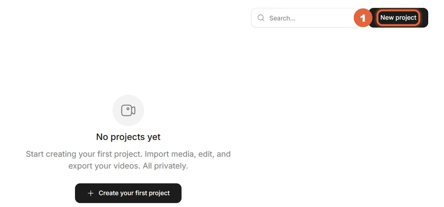
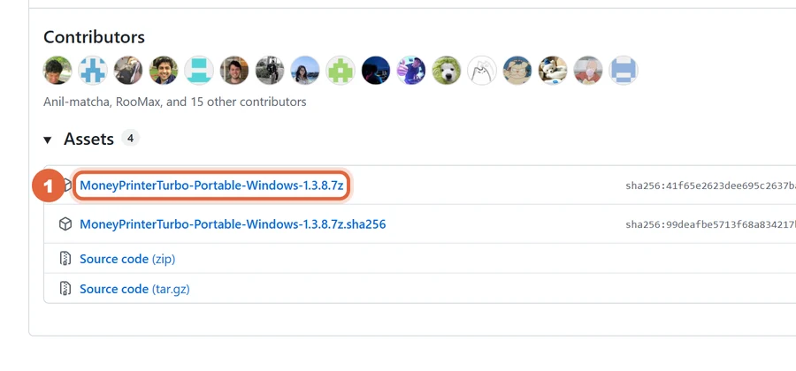
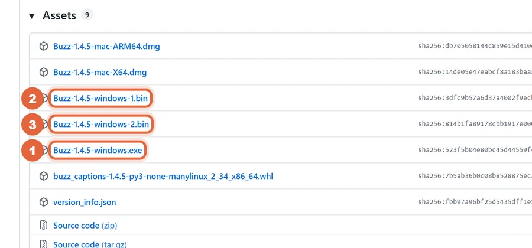
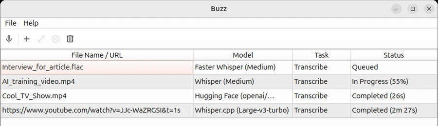
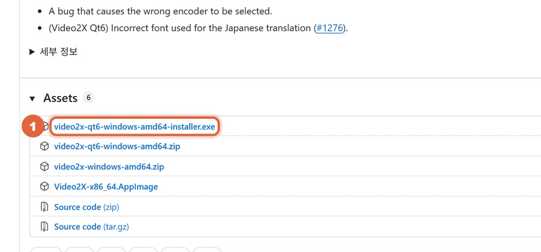
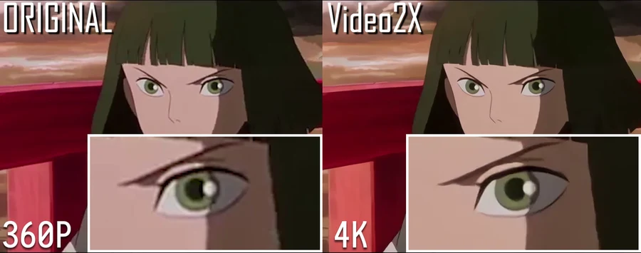
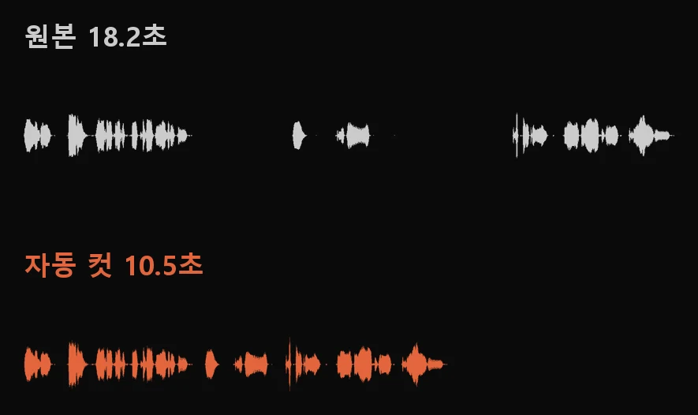
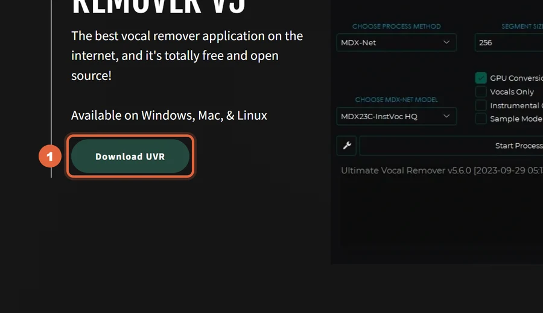
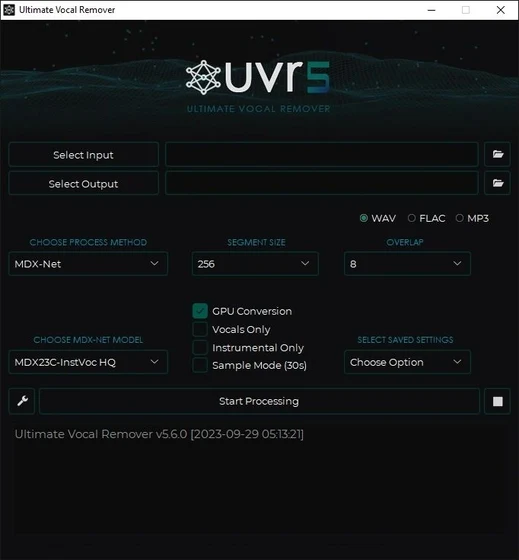

편집, AI 쇼츠 만들기, 자막, 배경 지우기, 화질 올리기, 무음 자르기, 보컬 분리를 무료 오픈소스로 해요. 도구마다 받는 곳과 처음 쓰는 순서를 정리했어요.
opencut.app/projects에 들어가 오른쪽 위 New project를 누르면 로그인 없이 편집 화면이 열려요. 영상을 끌어다 타임라인에 놓고 자르고, 오른쪽 위 Export로 내보내요. 파일은 내 PC 브라우저 안에서만 처리돼요.

Releases 페이지 Assets에서 Portable-Windows ….7z(약 900MB)를 받아 7-Zip으로 풀어요. 푼 폴더에서 update.bat을 먼저, 그다음 start.bat을 두 번 클릭하면 브라우저에 웹 화면이 열려요. 설정에 AI 키(OpenAI·DeepSeek·Gemini 등 중 하나)와 무료 Pexels 키를 넣고, '영상 주제'에 한 줄 쓰고 생성을 누르세요.

Releases 페이지에서 윈도우 파일 3개(.exe 1개, .bin 2개)를 모두 같은 폴더에 받고 .exe를 실행해요. 서명 안 된 앱이라 경고가 뜨면 '추가 정보 → 실행'을 누르세요. 영상을 넣고 모델은 Whisper, 언어는 Korean으로 받아쓰기한 뒤 SRT로 내보내요. 처음 한 번 모델을 받고 나면 인터넷 없이 돼요.


명령 프롬프트(시작 버튼 → cmd)를 열고 아래 '설치' 줄을 붙여 넣은 뒤, '영상 배경 지우기' 줄로 돌리면 배경이 투명한 .mov가 나와요. ffmpeg이 필요해요. 처음 실행 때 AI 모델을 받아서 시간이 걸리고, CPU로는 몇 초짜리 영상도 몇 분 걸리니 짧은 영상부터 해 보세요.
Releases 페이지 Assets에서 video2x-qt6-windows-amd64-installer.exe를 받아 설치해요. 영상을 넣고 Real-ESRGAN(실사) 또는 Real-CUGAN(애니)을 고른 뒤 배율(2배·4배)을 정해 시작하세요.


명령 프롬프트에 아래 '설치' 줄을 넣고, 영상 파일 이름으로 돌리면 '_ALTERED'가 붙은 영상이 같은 폴더에 생겨요. 처음 실행 때 실행 파일을 한 번 받아요. 프리미어·다빈치에서 다시 손보고 싶으면 타임라인 파일로 내보내는 줄을 쓰세요.

ultimatevocalremover.com에서 Download UVR을 눌러 윈도우 설치 파일을 받아요. Select Input에 노래·영상, Select Output에 저장 폴더를 고르고 MDX-Net 모델로 Start Processing을 누르면 목소리와 반주가 따로 나와요.


브라우저에서 바로 · MIT
https://opencut.app https://github.com/OpenCut-app/OpenCut
윈도우 압축 파일 · MIT
https://github.com/harry0703/MoneyPrinterTurbo/releases
윈도우·맥 설치 파일 · MIT
https://buzzcaptions.com https://github.com/chidiwilliams/buzz/releases
명령 프롬프트에 한 줄 · MIT
pip install backgroundremover
입력 영상 이름만 바꿔서
backgroundremover -i 내영상.mp4 -tv -o 결과.mov
윈도우 설치 파일 · AGPL-3.0
https://github.com/k4yt3x/video2x/releases
명령 프롬프트에 한 줄 · 퍼블릭 도메인
pip install auto-editor
영상에서 쓴 설정
auto-editor 내영상.mp4 --edit audio:threshold=0.04 --margin 0.2s
자른 결과를 타임라인으로
auto-editor 내영상.mp4 --export premiere auto-editor 내영상.mp4 --export resolve
윈도우·맥 설치 파일 · MIT
https://ultimatevocalremover.com https://github.com/Anjok07/ultimatevocalremovergui/releases
도움이 되셨다면
@ai.antenna.kr
에서 바로 쓰는 AI 활용법을 계속 올립니다.